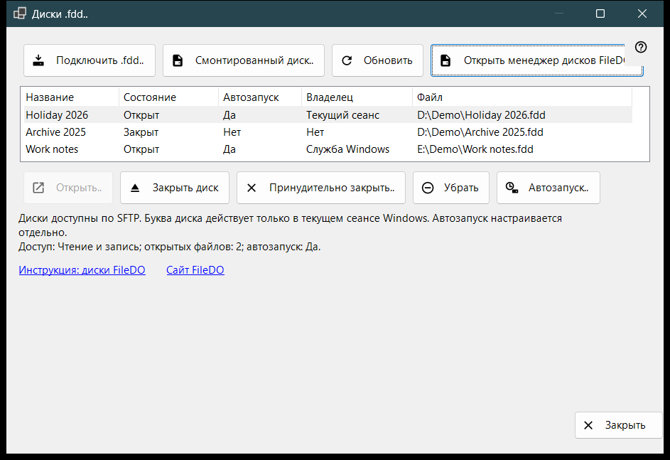
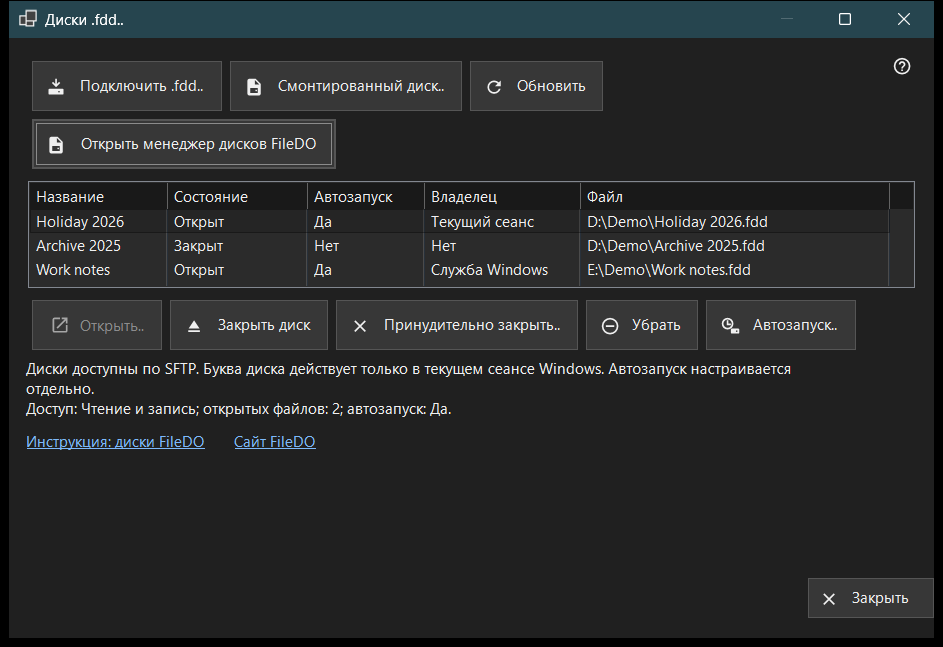

Диски .fdd
Назначение
Показывает диски FileDO (.fdd), которые этот ПК раздаёт по SFTP, и выполняет обычные команды с ними: подключить диск, открыть или закрыть его, убрать из раздачи и решить, открывать ли его вместе с сервером. Окно открывается из пункта «Диски .fdd..» меню добавления в главном окне Share Manager.


Порядок действий
- Нажмите «Подключить .fdd..», выберите файл .fdd и подтвердите диалог параметров.
- Выберите диск в списке; строка под списком показывает режим доступа, число открытых файлов и автозапуск.
- Для закрытого диска нажмите «Открыть..», для открытого - «Закрыть диск», а «Автозапуск..» меняет автоматическое открытие.
- «Обновить» перечитывает состояние; окно и само перечитывает его каждые 10 секунд.
- «Закрыть» закрывает окно.
Элементы окна
Список дисков
Каждая строка - один раздаваемый диск: Название, Состояние (Открыт, Открывается, Закрывается, Закрыт, Заблокирован, Ошибка или Неизвестно), Автозапуск, Владелец и путь к файлу .fdd (колонка «Файл»). Владелец показывает, кто держит диск открытым: Служба Windows, Текущий сеанс или Нет, если никто. Наведите курсор на строку, чтобы увидеть полный путь. Первая строка выбирается сама, а строка под списком показывает доступ (Только чтение или Чтение и запись), число открытых файлов и автозапуск. Если служба раздачи не умеет раздавать диски, список и кнопки команд скрыты, а в этой строке указана причина; если диск смонтирован самим FileDO, появляется ссылка «Открыть менеджер дисков FileDO».
Подключить .fdd..
Выберите файл .fdd и поставьте его на раздачу. Диалог параметров спрашивает Название, «Только чтение» и «Открыть после регистрации» (включено по умолчанию). Для зашифрованного диска он просит ещё Пароль, а диску можно назначить букву или оставить «Без буквы - только шаринг». Буква действует только в текущем сеансе Windows. Если диск уже открыт в FileDO, сначала сохраните изменения и закройте его там. Если регистрация прошла, а диск не открылся, сообщение скажет об этом, и диск останется в списке закрытым.
Смонтированный диск..
Выберите готовый диск этого ПК, например диск, который FileDO уже смонтировал. Окно закроется, и главное окно продолжит обычным шагом добавления папки для этого диска.
Открыть, закрыть и убрать
«Открыть..» открывает закрытый, заблокированный или завершившийся ошибкой диск и запрашивает пароль зашифрованного диска. «Закрыть диск» доступно только для открытого диска: клиенты временно теряют доступ, а открытым файлам даётся до 30 секунд на закрытие. «Принудительно закрыть..» сразу отключает открытые файлы, поэтому несохранённые данные могут быть потеряны. «Убрать» снимает диск с раздачи: диск закрывается, его автозапуск и сохранённый ключ удаляются, а файл .fdd остаётся. Перед каждым из этих действий выводится подтверждение, по умолчанию выбрана отмена.
Автозапуск
Колонка «Автозапуск» показывает «Да» или «Нет» для каждого диска без выбора строки. Прочерк (-) означает, что служба раздачи не поддерживает автозапуск; тогда кнопка «Автозапуск..» отключена. «Автозапуск..» переключает настройку после подтверждения: включение открывает диск вместе с сервером, а пароль зашифрованного диска сохраняется в защищённом хранилище Windows на этом ПК; выключение удаляет этот сохранённый ключ. Настройка не зависит от состояния, поэтому у закрытого или неисправного диска автозапуск может быть включён. Строки FileDO в списке главного окна тоже показывают его.
Инструкция, сайт и «Закрыть»
«Инструкция: диски FileDO» и «Сайт FileDO» открывают инструкцию и сайт FileDO - программы, из которой берутся диски. Если менеджер дисков FileDO не найден на этом ПК, окно предлагает установить FileDO с его сайта. «Закрыть» закрывает окно; пока идёт операция с диском, закрыть его нельзя.
Настройки менеджера · Настройки общего доступа SFTP · Настройки сервера обмена